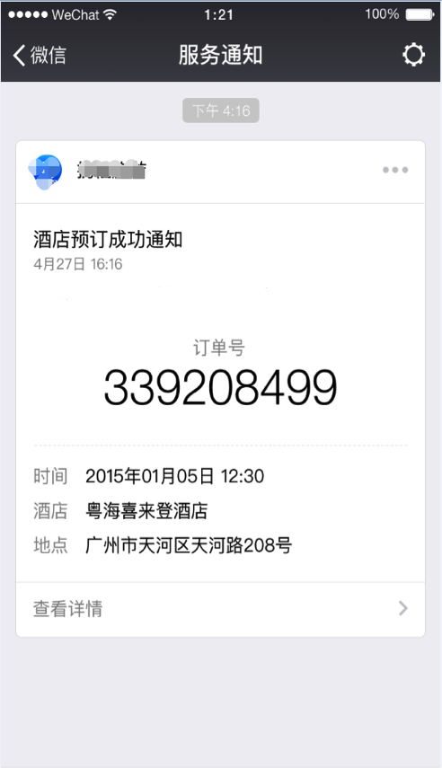

基于微信的通知渠道，我们为开发者提供了可以高效触达用户的模板消息能力，以便实现服务的闭环并提供更佳的体验。
模板推送位置：服务通知
模板下发条件：用户本人在微信体系内与页面有交互行为后触发，详见下发条件说明
模板跳转能力：点击查看详情仅能跳转下发模板的该帐号的各个页面
使用说明
- 获取模板id
登录https://mp.weixin.qq.com获取模板，如果没有合适的模板，可以申请添加新模板，审核通过后可使用，详见模板审核说明

页面的
<form/>组件，属性report-submit为true时，可以声明为需发模板消息，此时点击按钮提交表单可以获取formId，用于发送模板消息。或者当用户完成支付行为，可以获取prepay_id用于发送模板消息。调用接口下发模板消息（详见接口说明）
接口说明
1. 获取access_token
access_token是全局唯一接口调用凭据，开发者调用各接口时都需使用access_token，请妥善保存。access_token的存储至少要保留512个字符空间。access_token的有效期目前为2个小时，需定时刷新，重复获取将导致上次获取的access_token失效。
公众平台的API调用所需的access_token的使用及生成方式说明：
- 为了保密appsecrect，第三方需要一个access_token获取和刷新的中控服务器。而其他业务逻辑服务器所使用的access_token均来自于该中控服务器，不应该各自去刷新，否则会造成access_token覆盖而影响业务；
- 目前access_token的有效期通过返回的expire_in来传达，目前是7200秒之内的值。中控服务器需要根据这个有效时间提前去刷新新access_token。在刷新过程中，中控服务器对外输出的依然是老access_token，此时公众平台后台会保证在刷新短时间内，新老access_token都可用，这保证了第三方业务的平滑过渡；
- access_token的有效时间可能会在未来有调整，所以中控服务器不仅需要内部定时主动刷新，还需要提供被动刷新access_token的接口，这样便于业务服务器在API调用获知access_token已超时的情况下，可以触发access_token的刷新流程。
开发者可以使用AppID和AppSecret调用本接口来获取access_token。AppID和AppSecret可登录微信公众平台官网-设置-开发设置中获得（需要已经绑定成为开发者，且帐号没有异常状态）。AppSecret生成后请自行保存，因为在公众平台每次生成查看都会导致AppSecret被重置。注意调用所有微信接口时均需使用https协议。如果第三方不使用中控服务器，而是选择各个业务逻辑点各自去刷新access_token，那么就可能会产生冲突，导致服务不稳定。
接口地址：
https://api.weixin.qq.com/cgi-bin/token?grant_type=client_credential&appid=APPID&secret=APPSECRETHTTP请求方式:
GET参数说明 :
| 参数 | 必填 | 说明 |
|---|---|---|
| grant_type | 是 | 获取access_token填写client_credential |
| appid | 是 | 第三方用户唯一凭证 |
| secret | 是 | 第三方用户唯一凭证密钥，即appsecret |
返回参数说明：
正常情况下，微信会返回下述JSON数据包给开发者：
{"access_token":"ACCESS_TOKEN","expires_in":7200}| 参数 | 说明 |
|---|---|
| access_token | 获取到的凭证 |
| expires_in | 凭证有效时间，单位：秒 |
错误时微信会返回错误码等信息，JSON数据包示例如下（该示例为AppID无效错误）:
{"errcode":40013,"errmsg":"invalid appid"}2. 发送模板消息
接口地址：(ACCESS_TOKEN需换成上文获取到的access_token)
https://api.weixin.qq.com/cgi-bin/message/wxopen/template/send?access_token=ACCESS_TOKENHTTP请求方式：
POSTPOST参数说明：
| 参数 | 必填 | 说明 |
|---|---|---|
| touser | 是 | 接收者（用户）的openid |
| template_id | 是 | 所需下发的模板消息的id |
| page | 否 | 点击模板查看详情跳转页面，不填则模板无跳转 |
| form_id | 是 | 表单提交场景下，为submit事件带上的formId；支付场景下，为本次支付的prepay_id |
| value | 是 | 模板内容，不填则下发空模板 |
| color | 否 | 模板内容字体的颜色，不填默认黑色 |
| emphasis_keyword | 否 | 模板需要放大的关键词，不填则默认无放大 |
示例：
{
"touser": "OPENID",
"template_id": "TEMPLATE_ID",
"page": "index",
"form_id": "FORMID",
"data": {
"keyword1": {
"value": "339208499",
"color": "#173177"
},
"keyword2": {
"value": "2015年01月05日 12:30",
"color": "#173177"
},
"keyword3": {
"value": "粤海喜来登酒店",
"color": "#173177"
} ,
"keyword4": {
"value": "广州市天河区天河路208号",
"color": "#173177"
}
},
"emphasis_keyword": "keyword1.DATA"
}返回码说明：
在调用模板消息接口后，会返回JSON数据包。
正常时的返回JSON数据包示例：
{
"errcode":0,
"errmsg":"ok",
}错误时会返回错误码信息，说明如下：
| 返回码 | 说明 |
|---|---|
| 40037 | template_id不正确 |
| 41028 | form_id不正确，或者过期 |
| 41029 | form_id已被使用 |
| 41030 | page不正确 |
使用效果：

注意：内部测试阶段，模板消息下发后，在客户端仅能看到由“公众号安全助手”下发的简单通知。能收到该提示，即表明模板消息功能已经调试成功。待该功能正式上线后，将可以展示成上图效果。
下发条件说明
支付
当用户在小程序内完成过支付行为，可允许开发者向用户在7天内推送有限条数的模板消息（1次支付可下发1条，多次支付下发条数独立，互相不影响）
提交表单
当用户在小程序内发生过提交表单行为且该表单声明为要发模板消息的，开发者需要向用户提供服务时，可允许开发者向用户在7天内推送有限条数的模板消息（1次提交表单可下发1条，多次提交下发条数独立，相互不影响）
审核说明
1.标题
1.1标题不能存在相同
1.2标题意思不能存在过度相似
1.3标题必须以“提醒”或“通知”结尾
1.4标题不能带特殊符号、个性化字词等没有行业通用性的内容
1.5标题必须能体现具体服务场景
1.6标题不能涉及营销相关内容，包括不限于：
消费优惠类、购物返利类、商品更新类、优惠券类、代金券类、红包类、会员卡类、积分类、活动类等营销倾向通知
2.关键词
2.1同一标题下，关键词不能存在相同
2.2同一标题下，关键词不能存在过度相似
2.3关键词不能带特殊符号、个性化字词等没有行业通用性的内容
2.4关键词内容示例必须与关键词对应匹配
2.5关键词不能太过宽泛，需要具有限制性，例如：“内容”这个就太宽泛，不能审核通过
违规说明
除不能违反运营规范外，还不能违反以下规则，包括但不限于：
- 不允许恶意诱导用户进行触发操作，以达到可向用户下发模板目的
- 不允许恶意骚扰，下发对用户造成骚扰的模板
- 不允许恶意营销，下发营销目的模板
不允许通过服务号下发模板来告知用户在小程序内触发的服务相关内容
处罚说明
根据违规情况给予相应梯度的处罚，一般处罚规则如下：
第一次违规，删除违规模板以示警告，
第二次违规，封禁接口7天，
第三次违规，封禁接口30天，
第四次违规，永久封禁接口
处罚结果及原因以站内信形式告知